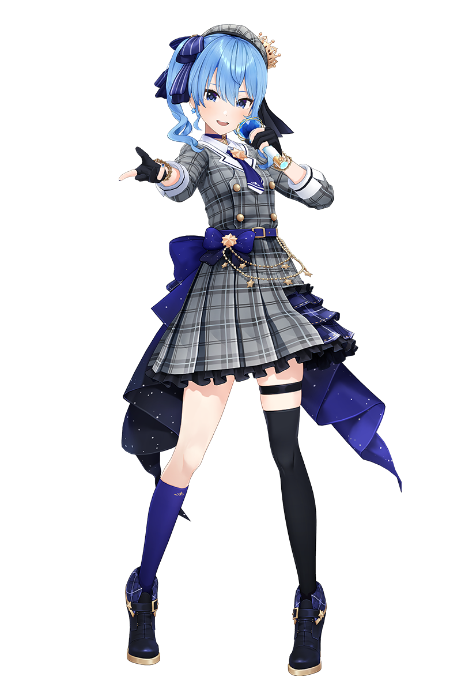

| Hoshimachi Suisei |  |
Hoshimachi Suisei's hit song "BIBBIDIBA" surpassed 120 million views on YouTube and won a Bronze Clio Music Award in 2025. She is also set to become the first Hololive member to perform a solo live at the legendary Nippon Budokan. She was also recently added to the game Fortnite along with a few of her songs. |
| Hololive's Offical Card Game | 5/13 | Description |
| Hololive Records | 11/28 | 303-555-5555 |